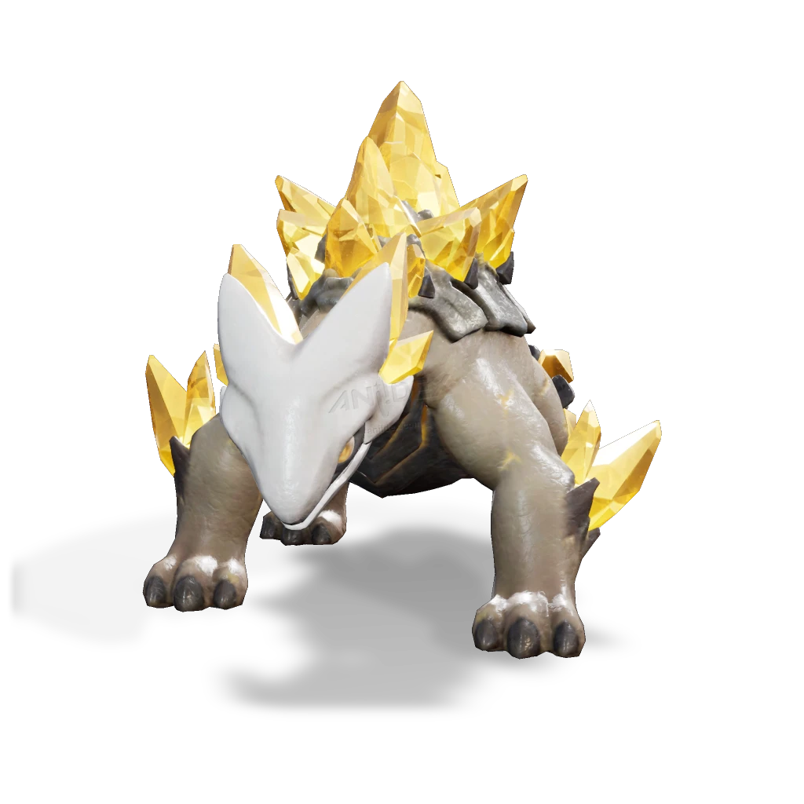

รายชื่อ Aniimo › #074

กิ้งก่าหนามแร่ (Minespine)
#074ธาตุดินNovaBreakTier B
ไม่ว่าที่ใดที่มีแร่ผลึก ที่นั่นก็จะมีสิ่งเหล่านี้อยู่ด้วย โครงสร้างแข็งของพวกมันทำหน้าที่ทั้งเป็นเกราะป้องกันและเป็นแหล่งเก็บพลังงาน
ดูรายละเอียดเต็ม ร่างพิเศษ และร่างเปล่งประกายค่าสถานะพื้นฐาน
| HP | 110 |
|---|---|
| ATK | 90 |
| P.DEF | 97 |
| M.DEF | 60 |
| REGEN | 78 |
| BREAK | 105 |
สกิล
| โจมตีปกติ | ATK ดิน (ทำลาย) ใช้พลังแห่งดินโจมตีเป้าหมายในระยะใกล้ |
| สกิล 1 | Stone Shell ดิน ยิงกระสุนหินใส่เป้าหมาย |
| สกิล 2 | Earth Spikes ดิน สร้างแนวหนามหินที่ยื่นไปข้างหน้า เจาะทะลุเป้าหมายทั้งหมดที่ขวางทาง |
| สกิล 3 | Seismic Wave ดิน ปล่อยคลื่นกระแทกต่อเนื่อง ทำดาเมจทุกวินาทีเป็นเวลา 8 วิ. |
| อัลติเมต | Meteor Shower ดิน ปลดปล่อยพลังงานทั้งหมดที่สะสมอยู่ในแร่ธาตุบนหลังขึ้นสู่ท้องฟ้า ก่อนเปลี่ยนเป็นอุกกาบาตที่โปรยปรายลงมาใส่เป้าหมาย |
สายวิวัฒนาการ
- กิ้งก่าหลังหิน → กิ้งก่าหนามแร่ (แอนีโมเลเวล 48, เอาชนะกิ้งก่าหนามแร่อัลฟา)
Held Item ที่แนะนำ
- Gargantuan Horn แอนีโมที่ติดตั้งจะได้รับค่าทำลายเพิ่ม 0.7 หน่วยต่อเลเวล
งานใน Homeland
งานธาตุดิน Lv.3, ขนของ Lv.3